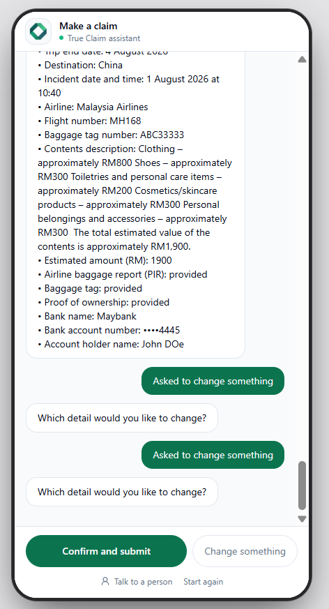
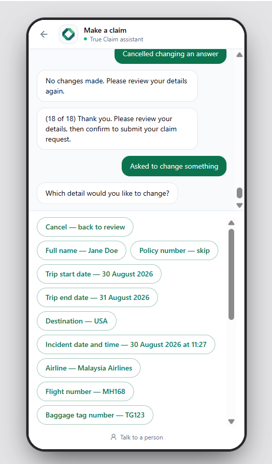
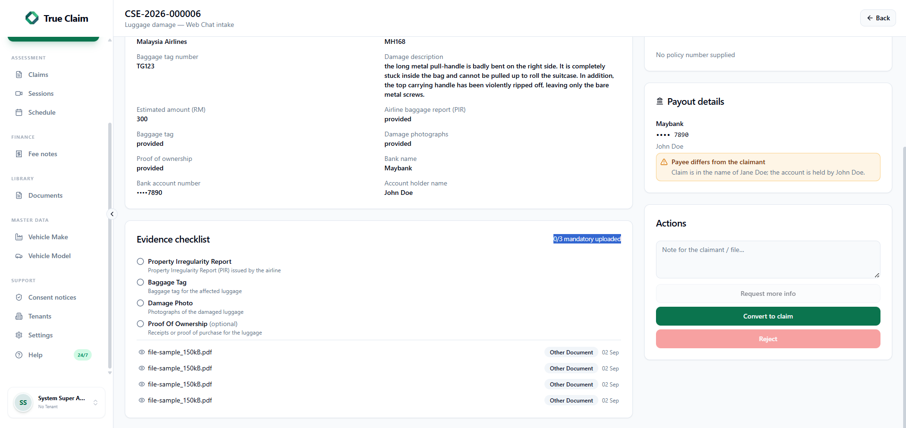
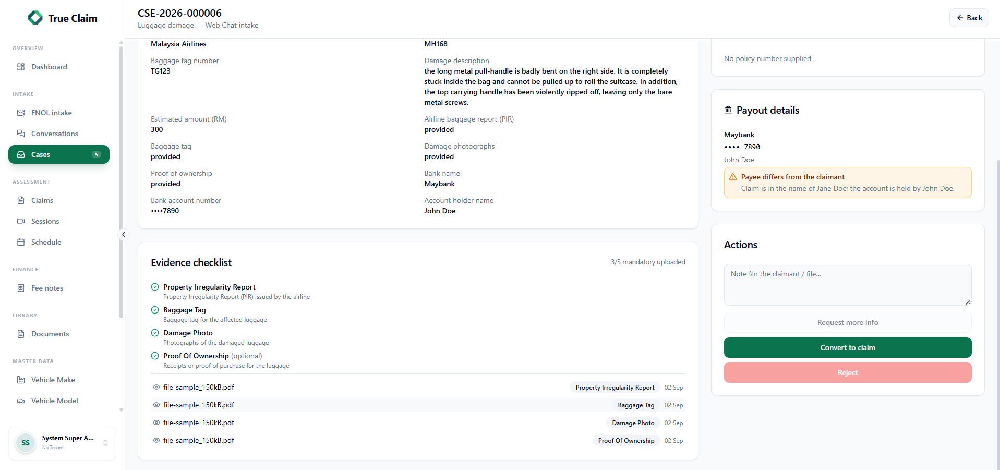
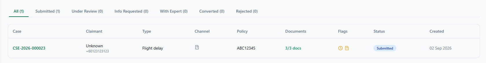
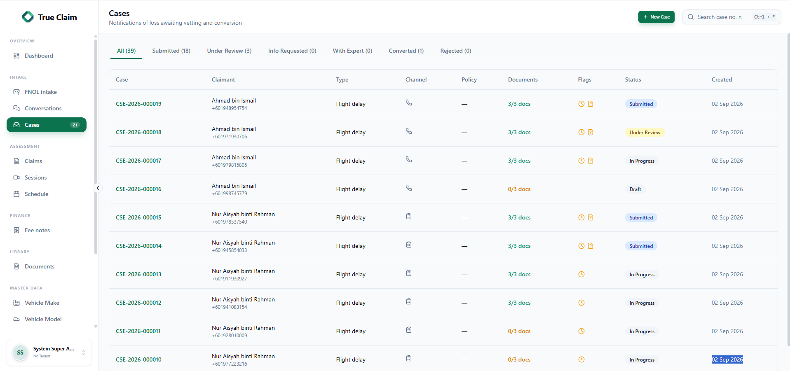

Claim intake fixes
Claimants can change answers safely, and uploaded evidence is matched to the correct checklist item. Staff must also link a policy before converting a case to a claim.
1. Changing an answer


- The claimant can choose which answer to change.
- The claimant can cancel without changing anything.
- The list scrolls on a phone.
2. Evidence checklist


- New uploads keep the correct evidence type.
- Previously uploaded files were corrected.
- The checklist count now matches the uploaded evidence.
3. Claimant name and web form icon


- The claimant name no longer shows as Unknown when an intake name is available.
- Web form cases use a form icon instead of an unknown icon.
4. Insurance company agent role Open question
Do we need a separate AGENT role for users from an insurance company?
- What work would an insurance company agent do?
- What cases and information should they be allowed to see?
- Can an existing role be used, or is a new role needed?